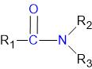
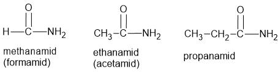
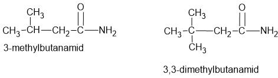
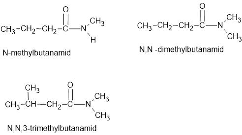

Struktur af amider
Amider har den generelle struktur der er vist på figuren. De tre radikaler R1, R2 og R3 kan evt. blot være H.

Navngivningen af amider
Navngivningen af amider minder meget om navngivningen af aminer (se evt. artiklen om navngivning af aminer).
Navngivning af amider uden sidekæder
Vi ser først på amider hvor R1 består af en uforgrenet alkylgruppe og hvor R2 og R3 blot består af H. Amider får endelsen "amid" og de fem første hedder således methanamid, ethanamid, propanamid, butanamid og pentanamid. De tre første er vist på figuren nedenunder. De to første er også kendt under navnene formamid og acetamid.

Navngivning af amider med sidekæder på carbonkæde
Hvis der sidder sidekæder (alkylgrupper) på carbonkæden, navngives de efter sædvanlige regler. Man tæller naturligvis fra det C der sidder tættest på N.

Navngivning af amider med sidekæder på nitrogenatomet
Sidekæder (alkylgrupper) kan også sidde på N-atomet. I så fald bruges "N" til at angive sidekædens placering.
